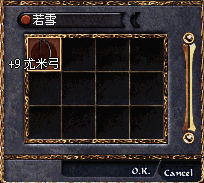

|
2002年6月25日
若雪成為香港伺服器首名Lv50妖精
月族大排擋血盟的若雪成為香港伺服器首名Lv50妖精！她除了可以變身為巴風特及巴列斯外，更可以使用指定傳送功能！而且在象牙塔更新後她更可以使用Lv5的精靈魔法！
不過妖精的Lv50指定傳送功能似乎不太有用，因為其偏差實在太遠了，在傳送後大約會在指定位置的數個畫面外，希望有關方面能夠改善這個功能。
大家一定十分好奇她使用甚麼武器了吧！

以下是香港太陽神伺服器暫時已知的Lv50+名單：
Lv52：
聖天（騎士）
AE86trueno（騎士）
Lv51：
曼陀羅（騎士）
Lv50：
CrazyLee（騎士）
獨劍行（騎士）
天劍絕刀2（騎士）
StarKnight（騎士）
一金毛一（法師）
Sino（騎士）
浪風（騎士）
戰將馬超（騎士）
Scythia（騎士）
火武神（騎士）
藍燄（王族）
若雪（妖精）
韓國測試伺服器6月25日更新內容
原文：韓國天堂官方網站公告
中文翻譯：天堂。晴月
韓國測試伺服器於6/25更新下列事項。
1. 變身黑暗精靈射箭速度加快，不過變身等級限制由40調高為52。
2. 妖精魔法Body to Mind 和Blood to Soul 延遲時間增加，使玩家無法快速使用體力/魔力轉換。
3. 狗攻擊玩家造成的傷害與玩家攻擊狗造成的傷害降低。
4. 使用復活捲軸的延遲時間增加，在正常使用下這個改變並不顯著。
5. 奇岩競技場決鬥系統變更。
6. 歐瑞區NPC販賣物品變更。
7. 小型問題修正。
美國正式伺服器6月25日更新內容
原文：美國天堂官方網站公告
中文翻譯：天堂。晴月
美國正試伺服器於6/25更新下列事項。
1. 麥金塔版本上比玩家等級低很多的怪物名稱顯示修正。
2. 麥金塔版本的元素抵抗顯示修正。
3. 麥金塔版本新區域的紙地圖修正，現在可以正確顯示玩家位置了。
4. 更新許多Episode 11 的檔案，直到Episode 11 開放前這些檔案將沒有作用。
某些怪物具有元素屬性，並且會根據其屬性得到較多／較少的傷害，例如火屬性怪物將不容易被火屬性的攻擊傷害。
|